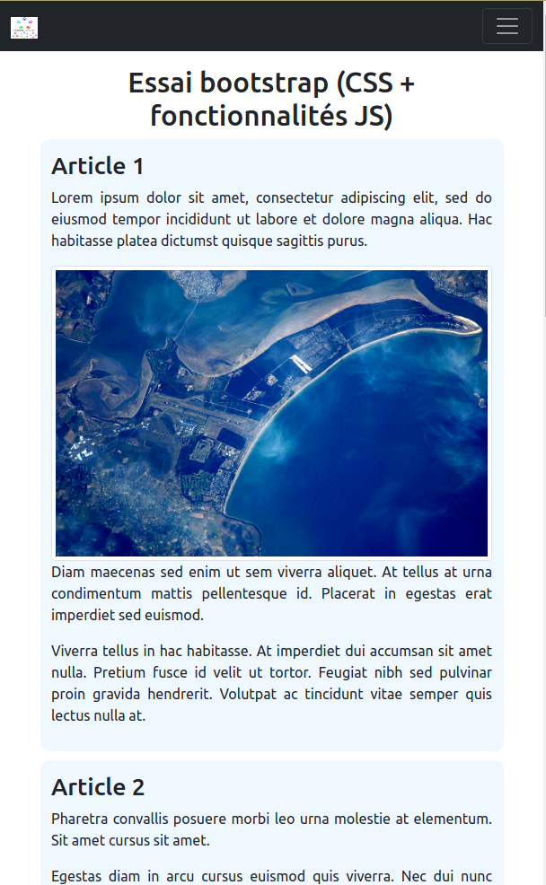

Le framework Bootstrap

1. Introduction
Le développement de sites web requiert une très bonne connaissance des langages du web (HTML, CSS, JavaScript), mais leur apprentissage, pour en maitriser tous les aspects, peut être long et difficile.
Des frameworks (ou cadriciels) sont proposés pour faciliter cette tâche. Un framework est une collection de briques de code bien structurées et prêtes à l'emploi permettant de faciliter le développement et la maintenance d'un projet informatique. L'un des plus utilisés est Bootstrap.
Bootstrap est un kit CSS, incluant aussi des composant HTML et javascript, créé par les développeurs de Twitter. Il est devenu le framework CSS de référence et est disponible en open source. Au 09/01/2023, la dernière version est la v5.3.0-alpha1 (la version 4.6.1 est la dernière mise-à-jour en v4.x).
Ce framework :
- facilite l'utilisation des règles CSS pour concevoir des sites attractifs et adaptatifs (Responsive Web Design)
- utilise une grille d'affichage pour agencer les différentes boîtes d'affichage des sites et s'adaptant immédiatement différents type de supports (ordinateurs, tablettes, smartphones)
1.1 Avantages
- portabilité (cross-browser) : présentation similaire quel que soit le navigateur
- homogénéité : ensemble de styles prédéfinis partagés, éléments complémentaires (barres de navigation, boutons...) uniformisés
- simplicité : système de grille pour positionner des éléments
- adaptabilité (responsive) : par défaut l'affichage s'adapte à la taille de l'écran (mobile-first)
- facilité d'utilisation : avec des connaissances de base en HTML et CSS
Remarque: D'autres framework CSS connus sont par exemples Foundation, Bulma ou Semantic UI. Ils proposent des fonctionnalités similaires.
1.2 Utilisation
Pour utiliser Bootstrap dans une page HTML il faut inclure un ou plusieurs des fichiers distribués : http://getbootstrap.com/getting-started/. Plusieurs approches peuvent être utilisées pour inclure le(s) fichier(s) nécessaires (elles offrent différentes options et/ou correspondent à différents contextes de travail) :
-
Téléchargement en local des fichiers distribués depuis le site Web de Bootstrap et inclusion dans la page HTML de manière habituelle : l'archive zippée proposée est décompressée et vous faites référence (par des liens relatifs) à ces fichiers dans votre document HTML.
-
Utilisation d'un CDN (Content Delivery Network - réseau de diffusion de contenu), une infrastructure de serveurs "qui coopèrent afin de mettre à disposition du contenu ou des données à des utilisateurs". Ce procédé permet d'optimiser le temps de chargement (performance des serveurs contactés, mise en cache du contenu par le navigateur Web, diminution de la charge du serveur servant le reste de la page, etc.). L'inclusion dans la page HTML est similaire, il suffit simplement d'utiliser l'URL d'un de ces CDN :
<head>
<link
href="https://cdn.jsdelivr.net/npm/bootstrap@5.3.0-alpha1/dist/css/bootstrap.min.css"
rel="stylesheet"
integrity="sha384-GLhlTQ8iRABdZLl6O3oVMWSktQOp6b7In1Zl3/Jr59b6EGGoI1aFkw7cmDA6j6gD"
crossorigin="anonymous">
</head>
- Utilisation d'un gestionnaire de paquets Javascript (
npm, node package manager, par exemple) - cette solution ne sera par abordée dans le cadre de ce TP.
Remarque: Dans le cadre des premières parties de ce TP nous n'aborderons pas les fonctionnalités JavaScript offertes par Bootstrap et nous n'inclurons donc que le fichier CSS qui est distribué. Pour utiliser ses fonctionnalités Javascript, vous devriez inclure le fichier javascript de Bootstrap (
bootstrap.js).
2. Le système de grille
Documentation officielle :
2.1 En théorie
Une des difficultés avec HTML + CSS est la maîtrise du placement des éléments dans une page.
Pour faciliter celui-ci Bootstrap propose un système de grille (grid) composée de 12 colonnes (col), et d’un nombre de lignes (row) potentiellement illimité. Les élements de contenu sont placés dans cette grille, en utilisant une ou plusieurs de ses cellules.
Ce système de dimensionnement à les propriétés suivantes :
-
la largeur des colonnes est exprimée en % de la largeur de la fenêtre de visualisation
-
la hauteur des lignes est fixée par la hauteur de son contenu et prend la hauteur du plus gros élément qu'elle contient

La puissance de Bootstrap réside dans le fait que le système de grille est responsive :
Les colonnes d'une même ligne se réorganisent automatiquement selon la largeur de la fenêtre d'affichage : si la fenêtre est suffisamment large, elles sont côte à côte, sinon elles s'empilent.
Il est également possible de jouer sur la taille des contenus, voir de les faire disparaître.
2.2 En pratique
2.2.1 Les classes à utiliser
On utilise ce système de grille grâce à des classes CSS particulières qui vont être associées à des éléments HTML pour déterminer leur largeur en nombre de colonnes.
Concrètement il va falloir :
-
un conteneur (
<div>,<section>, ..) ayant la classe :containerpour une grille de largeur fixe (définit selon les tailles d'écrans), centrée sur la page, ou biencontainer-fluidpour une grille occupant toute la largeur de l'écran (width: 100%), ou biencontainer-{breakpoint}pour une grille occupant toute la largeur de l'écran jusqu'au breakpoint définit.
-
définir une ligne avec la classe
row -
définir une colonne de la ligne avec
col-{breakpoint}-{width}- o√π
breakpointcorrespond à la largeur d'écran au dessous de laquelle l'élément s'empile avec ses frères :sm,md,lg,xlouxxl, - où
widthcorrespond à la largeur de la colonne, en nombre de colonnes élémentaires, de 1 à 12.
- o√π
Exemple:
<div class="container">
<div class="row">
<div class="col-sm-4">One of three columns</div>
<div class="col-sm-4">One of three columns</div>
<div class="col-sm-4">One of three columns</div>
</div>
<div class="row">
<div class="col-lg-6">One of two columns</div>
<div class="col-lg-6">One of two columns</div>
</div>
<div class="row">
<div class="col-md-2">Third row, 1st column</div>
<div class="col-md-7">Third row, 2nd column</div>
<div class="col-md-3">Third row, 3rd column</div>
</div>
</div>
Résultat:
2.2.2 Point de rupture
|
Extra small <576px |
Small ≥576px |
Medium ≥768px |
Large ≥992px |
X-large ≥1200px |
XX-large ≥1400px |
|
|---|---|---|---|---|---|---|
| Max container width | None (auto) | 540px | 720px | 960px | 1140px | 1320px |
| Class prefix | .col- |
.col-sm- |
.col-md- |
.col-lg- |
.col-xl- |
.col-xxl- |
| # of columns | 12 | |||||
| Gutter width | 1.5rem (.75rem on each side of the column) | |||||
| Nestable | Yes | |||||
| Column ordering | Yes | |||||
2.2.3 Illustration de l'effet des breakpoints


Version interactive : ici.
2.2.4 Possibilité de ne pas spécifier la largeur pour des colonnes de mêmes tailles :
Exemple:
<div class="container">
<div class="row">
<div class="col-sm">One of three columns</div>
<div class="col-sm">One of three columns</div>
<div class="col-sm">One of three columns</div>
</div>
<div class="row">
<div class="col-lg">One of two columns</div>
<div class="col-lg">One of two columns</div>
</div>
<div class="row">
<div class="col-md-2">Third row, 1st column</div>
<div class="col-md-7">Third row, 2nd column</div>
<div class="col-md-3">Third row, 3rd column</div>
</div>
</div>
Résultat:
2.2.5 Utilisation sans spécifier de point de rupture :
Exemple:
<div class="container">
<div class="row">
<div class="col">One of seven columns</div>
<div class="col">One of seven columns</div>
<div class="col">One of seven columns</div>
<div class="col">One of seven columns</div>
<div class="col">One of seven columns</div>
<div class="col">One of seven columns</div>
<div class="col">One of seven columns</div>
</div>
<div class="row">
<div class="col">One of two columns</div>
<div class="col">One of two columns</div>
</div>
<div class="row">
<div class="col-md-2">Third row, 1st column</div>
<div class="col-md-7">Third row, 2nd column</div>
<div class="col-md-3">Third row, 3rd column</div>
</div>
</div>
Résultat:
3. Autres composants de Bootstrap
Ce framework permet également, toujours par l'utilisation de classes qu'il définie, d'appliquer des styles cohérents à un certain nombre d'éléments html (img, button, input, etc.) ainsi que de composer des éléments plus complexes (dropdown menus, navbar, etc.).
3.1 Intégration d'images responsive
Documentation officielle :
Comme avec le système de grille, il va être possible d'appliquer simplement aux images des classes CSS qui vont permettre de faciliter leur intégration dans une page responsive. Quelques-unes des classes utilisables sont les suivantes :
- la classe
img-fluidpermet de rendre l'image responsive, - la classe
img-thumbnailpermet de rendre l'image responsive et de lui ajouter une marge arrondie de 1px (effet vignette), - la classe
roundedpermet d'arrondir les angles de l'image, - la classe
rounded-circlepermet de découper l'image selon une ellipse.
3.2 Un composant simple : le bouton
Documentation officielle :
Ces éléments peuvent être facilement combinés pour en créer de plus complexes, comme ici avec :
Bouton contenant un badge :
Code HTML:
<button type="button" class="btn btn-primary">
Notifications <span class="badge badge-light">4</span>
</button>
Résultat:
Groupe de 3 boutons sans se soucier des angles à arrondir :
Code HTML:
<div class="btn-group" role="group" aria-label="Basic example">
<button type="button" class="btn btn-secondary">Left</button>
<button type="button" class="btn btn-secondary">Middle</button>
<button type="button" class="btn btn-secondary">Right</button>
</div>
Résultat:
4. Mise en pratique - Exercice 1
üöÄ Consignes:
-
Récupérer les données du jour : TP4.zip et extraire le contenu de l'archive sur votre ordinateur.
-
Ouvrir la page
page_bootstrap1.html(dans votre navigateur et dans votre éditeur de code). Cette page contient déjà plusieurs blocs de texte formatés sous la forme de paragraphes et organisés dans 3<article>et dans 2<section>. -
Inclure le fichier CSS de bootstrap dans la section
headdu document HTML en utilisant un CDN :
<head>
...
<link
href="https://cdn.jsdelivr.net/npm/bootstrap@5.3.0-alpha1/dist/css/bootstrap.min.css"
rel="stylesheet"
integrity="sha384-GLhlTQ8iRABdZLl6O3oVMWSktQOp6b7In1Zl3/Jr59b6EGGoI1aFkw7cmDA6j6gD"
crossorigin="anonymous">
...
</head>
-
On souhaite organiser la page en utilisant le système de grille de Bootstrap présenté précédemment afin qu'elle présente son contenu de manière responsive. Les instructions concernant le style des éléments et le comportement relatif à la taille de la fenêtre du navigateur sont présentées ci-dessous :
- les articles doivent être affichés sur un fond de couleur
aliceblue, avoir des bords arrondis (border-radius) à une longueur de 10px, et utiliser une marge interne (padding) de 12.5 pixels. - les articles doivent être placés sur une même ligne et occuper une largeur identique si la largeur de la fenêtre est plus grande ou égale à 768 pixels, sinon ils s'empilent. Lorsqu'ils s'empilent ils doivent être séparés d'un espace de 10px.
- les sections doivent être affichées sur un fond de couleur
cornsilk, avoir des bords arrondis (border-radius) à une longueur de 10px, et utiliser une marge interne (padding) de 8 pixels. - les sections doivent être placées sur une même ligne et occuper une largeur identique si la largeur de la fenêtre est plus grande ou égale à 768 pixels, sinon elles s'empilent. Lorsqu'ils s'empilent ils doivent être séparés d'un espace de 10px.
- les articles doivent être affichés sur un fond de couleur
Pour cet exercice comme pour les deux suivants, vous écrirez vos règles CSS directement dans le fichier HTML, entre les balises <style> </style> à insérer dans l'en-tête du document (cf. TP2).
Le résultat attendu est présenté ci-dessous.


5. Mise en pratique - Exercice 2
üöÄ Consignes:
-
Copiez la page
page_bootstrap1.htmlverspage_bootstrap2.html. C'est sur ce nouveau document que vous travaillez désormais. -
Modifier le document de manière à ce que, lorsque la largeur de la fenêtre est supérieure à 768px, les articles occupent respectivement 25%, 50% et 25% de la largeur de la page.
-
Veillez à ce que le texte des articles et des sections soit désormais justifié.

5. Mise en pratique - Exercice 3
üöÄ Consignes:
-
Copiez la page
page_bootstrap2.htmlverspage_bootstrap3.html. C'est sur ce nouveau document que vous travaillez désormais. -
Nous souhaitons intégrer les images qui correspondent à nos 3 articles. Elles doivent s'insérer de manière harmonieuse avec l'article correspondant. Les images à utiliser sont les suivantes :
- https://upload.wikimedia.org/wikipedia/commons/c/cc/ESC_large_ISS022_ISS022-E-11387-edit_01.JPG (Vue aérienne de l'aéroport international de Hobart en Tasmanie)
- https://upload.wikimedia.org/wikipedia/commons/7/73/MatanuskaGlacierPanorama.jpg (Le glacier Matanuska en Alaska)
- https://upload.wikimedia.org/wikipedia/commons/1/15/Ile-large-2017-port.jpg (Vue aérienne de l'île du Large)
Veillez à ce que la première et la troisième image présentent un effet de vignette. La seconde image devra être découpée selon une forme d'ellipse.
-
Centrez le titre de la page.

6. Des composants plus complexes : navbar, dropdown menu, etc. - Exercice 4
Les exemples précédents ont pour vocation de fournir une introduction à la manière dont fonctionne Bootstrap.
Certaines de ses fonctionnalités nécessitent l'ajout d'une dépendance Javascript propre à Bootstrap.
Vous devez l'inclure dans votre fichier HTML, en utilisant la balise <script>, de préférence à la fin de l'élément <body>.
En utilisant l'approche CDN :
<body>
<!--
Le contenu habituel de votre page ici ...
-->
<script
src="https://cdn.jsdelivr.net/npm/bootstrap@5.3.0-alpha1/dist/js/bootstrap.bundle.min.js"
integrity="sha384-w76AqPfDkMBDXo30jS1Sgez6pr3x5MlQ1ZAGC+nuZB+EYdgRZgiwxhTBTkF7CXvN"
crossorigin="anonymous">
</script>
</body>
Vous pouvez maintenant bénéficier de certains éléments de Bootstrap qui nécessitent ces fonctionnalités Javascript, et ce sans saisir de code Javascript supplémentaire (sauf si nécessaire). C'est par exemple le cas des barres de navigation et des menus déroulants.
-
Copiez la page
page_bootstrap3.htmlverspage_bootstrap4.html. C'est sur ce nouveau document que vous travaillez désormais. -
Votre page inclue déjà le fichier CSS de Bootstrap. Vous devez maintenant inclure la bibliothèque Javascript requises (
Bootstrap.js) dans votre page comme montré dans l'extrait de code précédent. -
Rendez-vous sur la page de documentation des barres de navigation : https://getbootstrap.com/docs/5.3/components/navbar/
-
Essayer d'inclure une barre de navigation noire contenant les entrées suivantes :
Accueil,Partenaires,ContactetÀ propos(ce sont les mêmes intitulés que dans le TP3) ainsi qu'un élément permettant d'effectuer une recherche. Fiez-vous aux exemple de la documentation de Bootstrap. Cette barre de navigation devra être responsive, lorsque la largeur de l'écran est inférieure à 992px, elle doit disparaître au profit de l'élément qui permet de la déplier (voir exemple ci-dessous).
Vous pouvez également chercher dans la documentation comment faire en sorte que l'élément de recherche et son bouton forment un groupe comme sur le screenshot ci-dessous (ce n'est à priori pas le comportement que vous avez par défaut mais bootstrap propose des classes permettant de faire ça facilement).
Largeur d'écran: 1250px
Largeur d'écran: 620px 
- Si vous avez réussi avec succès les questions précédentes c'est que vous maîtrisez déjà bien la documentation de Bootstrap. Essayer d'ajouter à la page en cours une fenêtre modale dont l'ouverture serait déclenchée par un clic sur un bouton. L'ensemble des informations sont présentes dans la documentation. Vous êtes libre de choisir le contenu de la fenêtre modale ainsi que la manière dont le lien entre le bouton et la fenêtre modale est défini dans votre code.